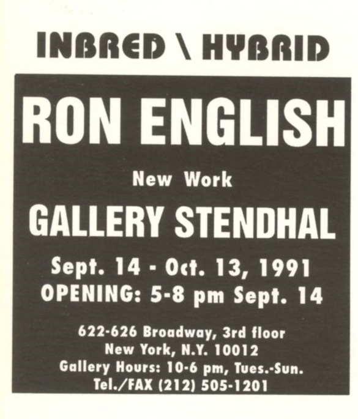
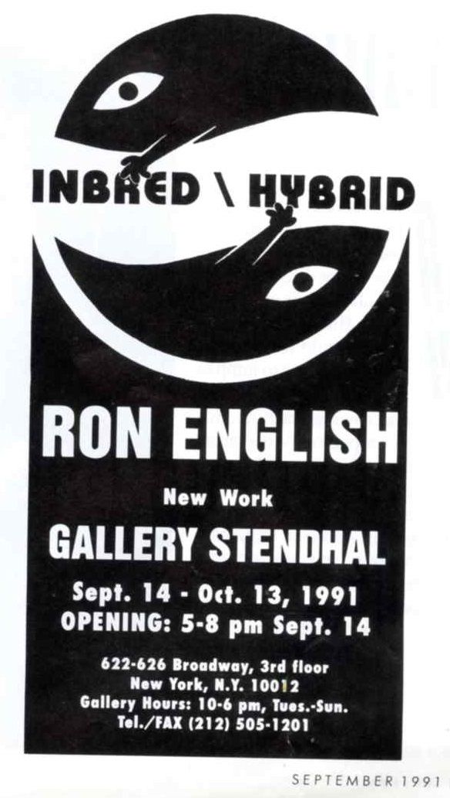
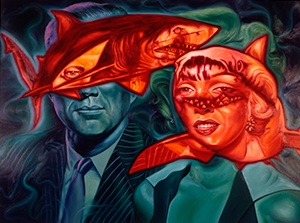
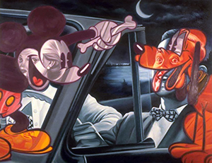
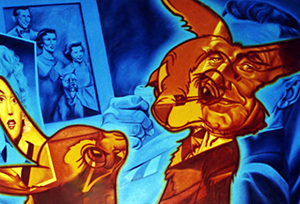
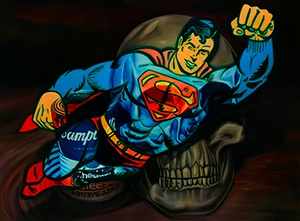
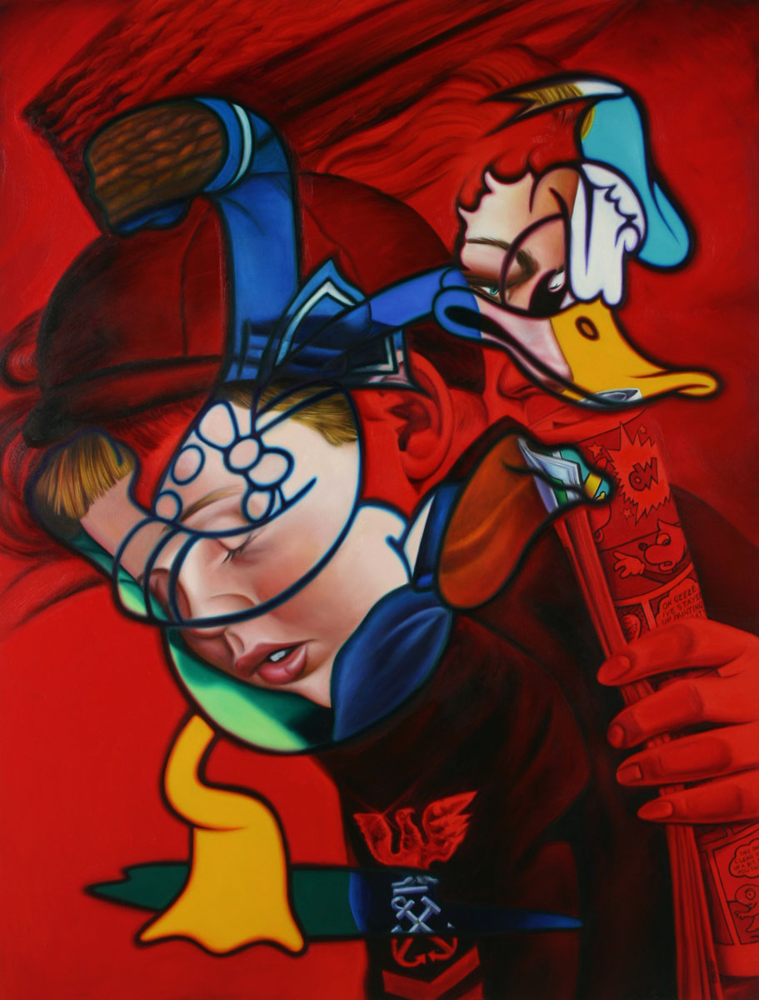

Inbred/Hybrid
Gallery Stendhal, New York, 1991.




Confirmed Works Documented in the Exhibition
The following works are confirmed as exhibited; additional works may also have been included.

Sybil War
1990

Shark Infested Waters
1991

Giving a Dog a Bone
1991

Give the Rabbit Some Tricks
1991

Bear and the Bull
1991

Postmodern Still Life
1991

Politics of Creation II
1991

Enfant Terrible
1991
Notes
Inbred/Hybrid was presented at Gallery Stendhal in New York from September 14 through October 13, 1991. Contemporary coverage in HYPE Magazine and in two issues of Cover documents the exhibition and its reception.
HYPE Magazine, in “applying ENGLISH to POP ART” by Mutant, discussed the exhibition in relation to Ron English’s use of familiar American cultural icons, layered visual juxtapositions, and the construction of “meta-characters” through overlapping signs and images.
Cover magazine also documented the exhibition twice: first with a full-page advertisement in the September 1991 issue, page 9, and then with a review in the October 1991 issue, page 16. In the October review, Eric Monder described the exhibition as Ron English’s first solo exhibition and characterized the paintings as placing phantasmagorical cartoon figures over familiar, canonized images associated with artists such as Dalí, Warhol, Haring, and others. Monder also singled out English’s reworking of Picasso’s Guernica as especially effective.
The October 1991 Cover page reproduces a painting captioned Duck, Duck, Goose, 1991, courtesy Stendhal. The work is identified here under its official title, Enfant Terrible.
The works shown here are confirmed as part of the exhibition, though the full checklist may have included additional paintings. Some titles used in contemporary coverage differ from the titles currently used for the works identified here.
Sources
- Exhibition card for Inbred/Hybrid, Gallery Stendhal, 626 Broadway, 3rd Floor, New York, New York, September 14–October 13, 1991.
- HYPE Magazine, “applying ENGLISH to POP ART,” text by Mutant, October 1991.
- Cover, September 1991, p. 9, full-page advertisement for Inbred/Hybrid.
- Cover, October 1991, p. 16, “Ron English,” by Eric Monder, under “Gallery Stendhal.”
- Gallery 98, Ron English: Inbred/Hybrid (Gallery Stendhal Card, 1991).